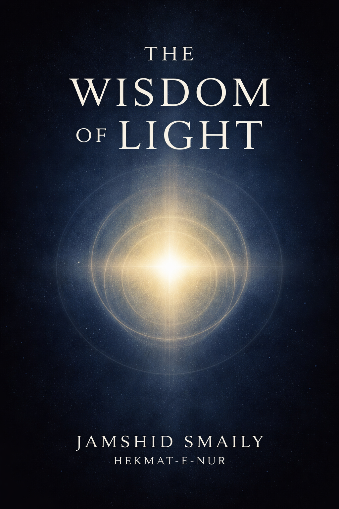

SMAILY
Knowledge • Wisdom • Impact
Knowledge • Wisdom • Impact
The Central Knowledge Hub of the Wisdom Domain
This hub brings together books, essays, articles, quotes, research notes and future projects related to wisdom, understanding and human development.
The Wisdom Hub serves as the primary gateway to all intellectual resources connected to the Wisdom Domain.
It is designed to evolve continuously as new books, articles, frameworks and research projects are added to the ecosystem.

The foundational work of the Wisdom Domain.
A long-term intellectual project exploring meaning, understanding, consciousness, illumination and human growth.
Foundational Wisdom Series
Reserved Position
Reserved Position
Reserved Position
Short-form knowledge resources.
Insights and reflections.
Learning-oriented content.
A growing collection of original quotations and concise reflections from the Wisdom Domain.
Long-form essays exploring meaning, knowledge, consciousness and understanding.
Research observations, conceptual frameworks and working notes supporting future books and studies.
Reserved Project Space
Reserved Project Space
Reserved Project Space
The cognitive layer of understanding.
The investigative layer of knowledge.
The practical realization of wisdom.
Continue exploring related domains and foundational works.
Wisdom Domain Ecosystem Map Foundational Works Digital Library